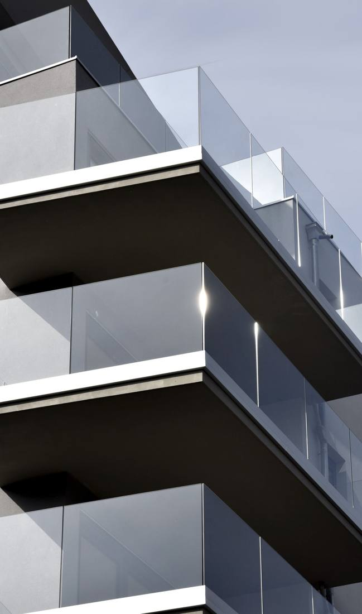
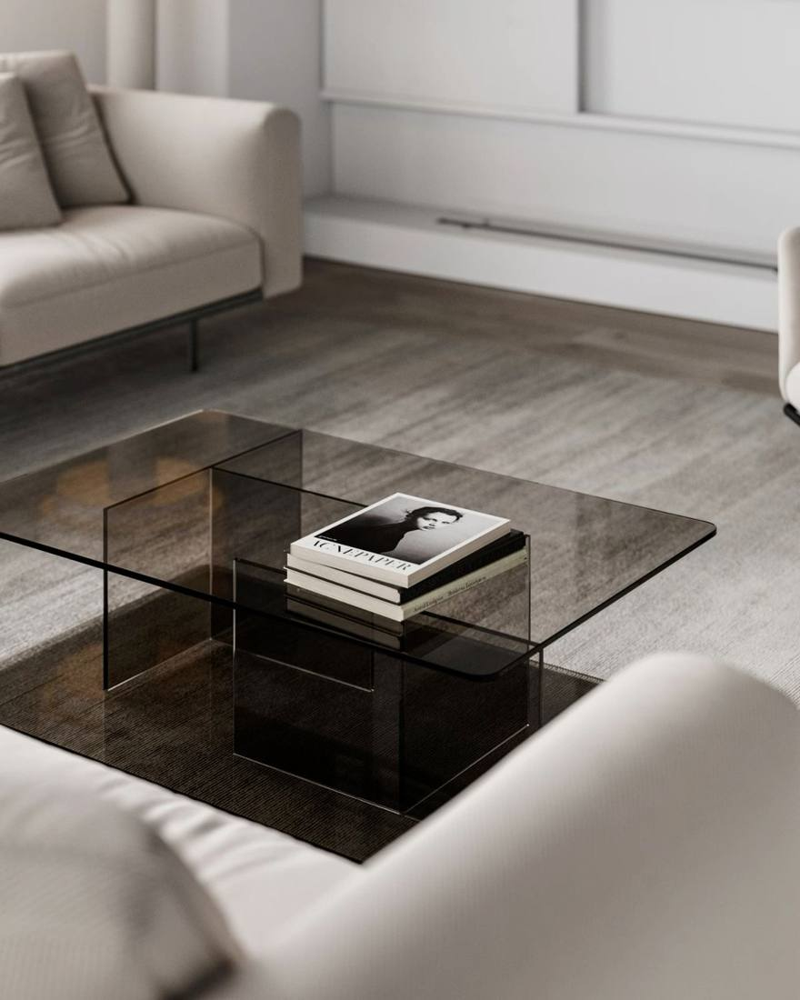

جامکاران جهاندیده|صنایع تولید شیشه سکوریت و آینه
شیشه سکوریت؛ ترکیب زیبایی و ایمنی
راهکاری مدرن برای فضاهای معماری و ساختمانی، با ظاهری یکپارچه و شفافیت چشم نواز.





راهکاری مدرن برای فضاهای معماری و ساختمانی، با ظاهری یکپارچه و شفافیت چشم نواز.


 مجموعه ایرانمال
مجموعه ایرانمال بازار مبل ایران ۳
بازار مبل ایران ۳ مجموعه تهرانمال
مجموعه تهرانمال مبلمان دورینو
مبلمان دورینو مبلمان چوبنی
مبلمان چوبنیشیشهای برای هر کاربرد، با دقتی که ماندگار است
جام کاران در زمینه تولید و فرآوری انواع شیشههای ساختمانی، دکوراتیو و ایمنی فعالیت میکند. ما تلاش میکنیم با تکیه بر تجربه، تجهیزات تخصصی و دقت در فرآیند تولید، شیشهای متناسب با نیاز پروژه ارائه دهیم.
از شیشههای مورد استفاده در دکوراسیون و مبلمان تا شیشههای ایمنی و ساختمانی، خدمات ما با توجه به نوع کاربرد، ابعاد و جزئیات موردنیاز پروژه انجام میشود.
برای ما، کیفیت فقط در محصول نهایی خلاصه نمیشود؛ دقت در اندازهگیری، توجه به جزئیات و پاسخگویی درست بخش مهمی از کاری است که انجام میدهیم.
توجه به ابعاد،الگو و مشخصات فنی هر سفارش
خدمات متنوع برای پاسخ گویی به نیاز های مختلف صنعت شیشه.
توجه به جزئیات برش و پرداخت متناسب با سفارش.
تعیین زمان تحویل و بررسی دقیق درخواست پیش از تولید.
شیشه سوپرکلیر با کاهش میزان آهن در ترکیب خود، شفافیت بالاتری نسبت به شیشه معمولی دارد و تهرنگ سبز آن کمتر دیده میشود. این ویژگی باعث نمایش طبیعیتر رنگها و وضوح بیشتر میشود؛ به همین دلیل در ویترینها، دکوراسیون داخلی و پروژههایی که شفافیت اهمیت دارد، انتخاب مناسبی است.
انتخاب ابعاد و ضخامت مناسب شیشه، به نوع کاربرد، محل نصب و شرایط پروژه بستگی دارد. شیشهها با توجه به مشخصات سفارش و محدودیتهای فنی تولید بررسی میشوند تا محصول نهایی متناسب با نیاز پروژه باشد.
رنگ شیشه نقش مهمی در جلوه بصری و هماهنگی آن با فضای معماری دارد. انتخاب رنگ مناسب میتواند میزان شفافیت، حس فضا و سبک طراحی را تحت تأثیر قرار دهد.
شیشه لاکوبل غیر شفاف است. رنگهای قابل سفارش مطابق موجودی و قابلیتهای مجموعه ارائه میشود. برای اطلاع از رنگهای موجود، با کارشناسان مجموعه تماس بگیرید.
فرآوری، مطابق طرح شما
با چاپ طرح، تصویر و نقش دلخواه روی شیشه، جلوهای متفاوت و اختصاصی به فضاهای معماری و دکوراسیون ببخشید. چاپ سفارشی امکان اجرای ایدههای متنوع و هماهنگی شیشه با سبک طراحی پروژه شما را فراهم میکند.
برای طرحهایی فراتر از ابعاد و فرمهای استاندارد، برش شیشه بر اساس الگوی موردنظر شما انجام میشود. این قابلیت امکان اجرای فرمهای خاص و جزئیات سفارشی را در پروژههای دکوراتیو و معماری فراهم میکند.
پرداخت لبه شیشه، علاوه بر ایجاد ظاهری تمیز و دقیق، متناسب با نوع کاربرد و طراحی پروژه انتخاب میشود.
سطحی مات و نیمهشفاف؛ نور میگذرد و دید مستقیم محدود میشود — مناسب فضاهایی که هم نور میخواهند هم حریم خصوصی.
ایمنی شیشه فقط به ظاهر و ضخامت آن محدود نمیشود. ویژگیهای فنی و عملکرد شیشههای ایمنی باید بر اساس الزامات و روشهای آزمون استانداردهای مربوطه ارزیابی شود.
در جام کاران، کیفیت و ایمنی شیشهها را با توجه به نوع محصول، کاربرد و الزامات فنی پروژه در نظر میگیریم تا محصول نهایی برای کاربرد موردنظر، الزامات مربوطه را تأمین کند.
استانداردهای مرتبط با شیشههای ساختمانی و ایمنی، مبنای کنترل کیفیت و ارزیابی عملکرد محصولات هستند.
سه سوال کوتاه؛ بدون ثبتنام و بدون ارسال اطلاعات. پاسخ فقط روی دستگاه شما محاسبه میشود.
پیشنهاد مشاور جای مشاوره کارشناس را نمیگیرد؛ قیمت نهایی بعد از بررسی مشخصات اعلام میشود.
رنگهای لاکوبل غیر از سفید و مشکی فقط در سفارشهای با تیراژ بالا پذیرفته میشوند و شیشه لاکوبل غیر شفاف است.